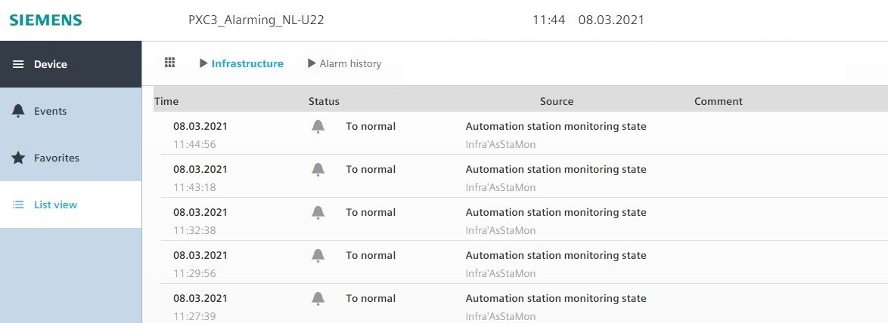

Principle of operation
There are system alarms and process alarms.
System alarms
System alarms monitor the reliability of data points or the state of networked devices. This always occurs as common alarm each for the automation station, field bus, room, room segment, or central function.
This information can be read and displayed via BACnet client, e.g. a management station. An error list displays the source(s).
Data points for DALI devices, grouped into a DALI group, cannot be monitored. Only the group speaker for a DALI group can be monitored.
Monitoring KNX PL-Link buttons is not possible for this version.
Process alarms
Additional BACnet objects are available in a room. They are not alarmable by default (condensation, frost, overtemperature monitor, etc.).
An event enrollment object must be generated on the room automation station if a customized alarm notification needs to be created.

The applicable system limits must be observed.
Preconfigured system alarms
Common alarm
A common alarm is formed by default in the room, room segment, and central function based on reliability monitoring. The source(s) can be determined from an error list.
Monitoring operating state
TX-I/O modules, KNX PL-Link components, or DALI components can be connected to the room automation station. The operating state of the various busses is monitored via the event enrollment objects "TXIOBusStaMon", "PlnkBusStaMon" or "DaliBusStaMon".
The operating state of the room automation station "AsStaMon" is also monitored by default.
For AsStaMon, Off Normal notification is suppressed (Event enable property for Off Normal transition set to False by default). To Normal notification is not suppressed, because in case of actual Fault condition the Fault would never disappear in alarm client(s).
Example of To-Normal transition notifications not suppressed:

Time response to system and process alarms
- Room automation station: The common alarm in the control program on the room automation station checks the reliability of the data points in each program cycle. The result is output at the configured delay time of 0 minutes from the data point for the common alarm. The delay is configured during engineering in ABT. Data points from networked devices are subject to additional delays based on the typical properties of the bus in question.
- TX-I/O: A change in reliability of a TX-I/O data point is displayed after ca. 30 seconds.
- KNX PL-Link: A change in reliability of a PL-Link data point is displayed after ca. 31 minutes. The last value remains. The automation station queries the state of devices on the bus every 15 minutes. If a fault exists and it still remains after the next query (after an additional 15 minutes), the field devices object is set to the corresponding state. A shorter update period is not possible.
- DALI: A change in reliability of a DALI data point (individual DALI devices or group speaker) is displayed after 30 seconds.